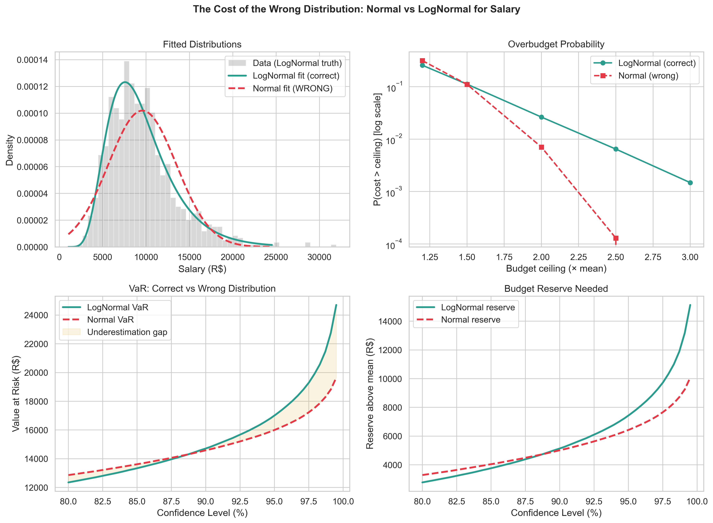
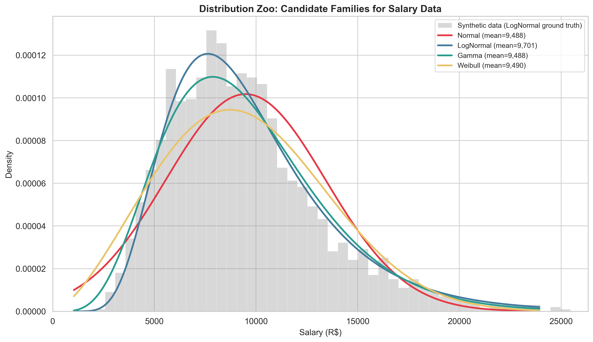
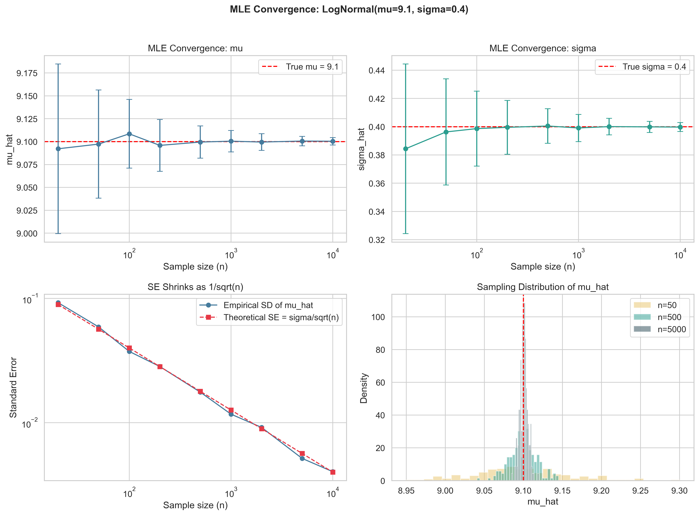
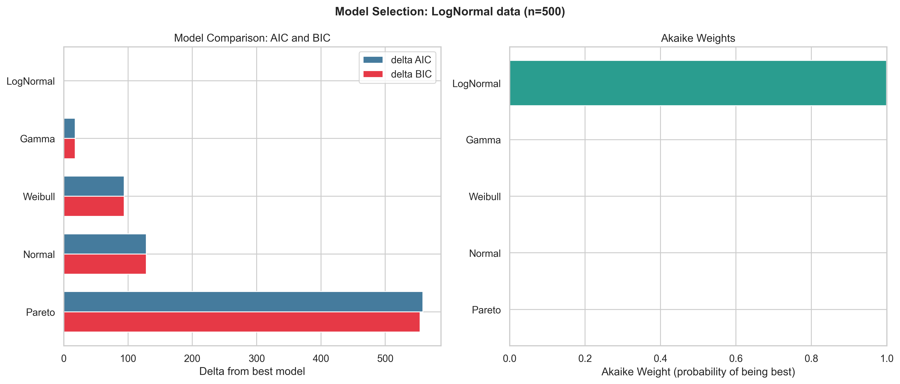
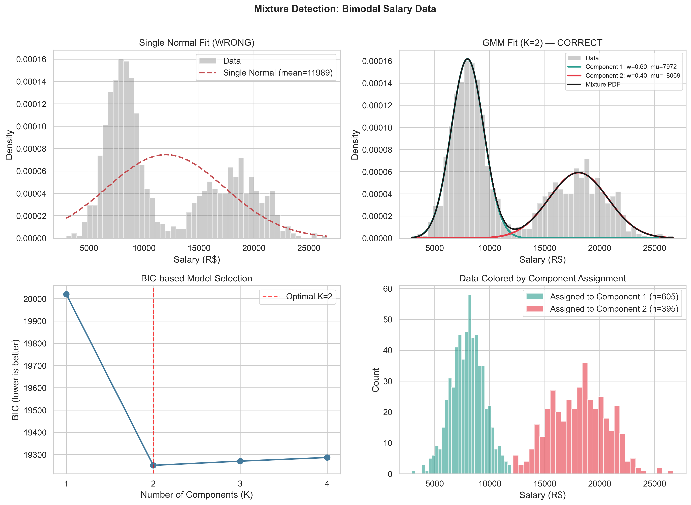
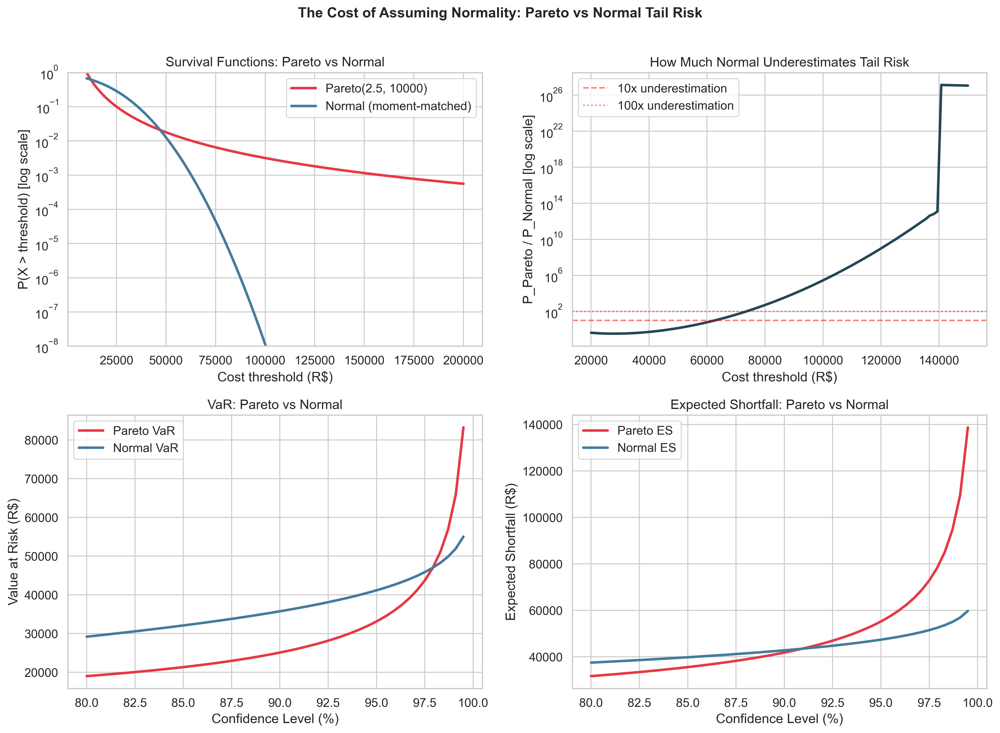
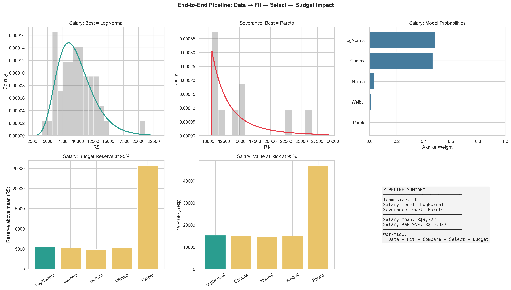

The Shape of What You'll Spend
What this is. A practical framework for choosing probability distributions in people-cost modelling — and for pricing the cost of choosing wrong. The headline result: assuming a Normal instead of the Pareto that actually fits severance data underestimates the probability of extreme expenses by a factor of 138x, with direct consequences for budget reserves. This is not a probability textbook or a Python tutorial: it assumes you accept that the wrong distribution = the wrong budget and want a rigorous, reproducible way to choose the right one.
What you should know before reading. Required: calculus (derivatives, integrals, a basic Taylor expansion), basic probability (PDF, CDF, expectation, variance), and a little linear algebra (matrix inversion appears briefly for Fisher information). Helpful but not required: prior exposure to Maximum Likelihood Estimation and to information criteria — both are derived from first principles here. Out of scope: Bayesian inference and MCMC, time-series and dependence modelling, and real-world data collection concerns (NDA, privacy).
What you will take away. A five-step decision procedure — visualise, fit, compare, validate, quantify — that you can apply to your own cost data, plus the vocabulary to defend the choice in front of a finance audience.
Code. Every figure and number is reproduced by versioned scripts with fixed seeds in the companion repository.
Notation
| Symbol | Meaning |
|---|---|
| $X$ | Random variable (a cost component) |
| $f(x \mid \theta)$ | Probability density function with parameter $\theta$ |
| $F(x)$ | Cumulative distribution function |
| $\hat{\theta}$ | Maximum Likelihood Estimate of $\theta$ |
| $\ell(\theta)$ | Log-likelihood function |
| $S(\theta)$ | Score function (gradient of $\ell$) |
| $I(\theta)$ | Fisher information |
| $n$ | Sample size |
| $k$ | Number of estimated parameters |
| $D_{KL}(p \| q)$ | Kullback-Leibler divergence from $p$ to $q$ |
| $\text{VaR}_p$ | Value at Risk at confidence level $p$ |
| $\text{ES}_p$ | Expected Shortfall at level $p$ |
Why Distributions Matter
A budget is a probability statement disguised as a spreadsheet. When an analyst projects people costs, they are implicitly assuming a probability distribution for each component — salaries, overtime, severance, hiring. In most organizations, that assumption is the Normal distribution: symmetric, light-tailed, well-behaved.
That assumption can break a quarter's budget. Under a Normal distribution, the probability of a severance event exceeding R\$ 50,000 is about 0.013% — once in 77,000 cases. Under the Pareto distribution that actually fits this kind of data, the same probability is 1.79% — once in 56 cases. A 138x gap. When that gap shows up in real layoffs, the cash reserve calibrated to the Normal assumption is no longer a safety margin; it is a fiction.
The problem is that people costs are not Normal. Salaries are right-skewed: most employees earn moderate wages while a few executives pull the mean upward. Severance costs are heavy-tailed: most are moderate, but a few extreme cases dominate the total. Salary data is often multimodal: clusters of juniors, mid-levels, and seniors form distinct peaks that no unimodal distribution can capture.
The distribution you assume is your model. Everything else — mean, variance, confidence intervals, risk estimates — flows from that choice. A wrong distribution is not a modelling nuance; it is a systematic bias that propagates through every downstream calculation.
$$\text{Wrong distribution} \rightarrow \text{wrong parameters} \rightarrow \text{wrong budget} \rightarrow \text{wrong decisions}$$
This article presents a rigorous framework for distribution selection in cost modelling. We derive Maximum Likelihood Estimation (MLE) from first principles, fit five candidate distribution families to synthetic cost data, and use information-theoretic criteria (AIC, BIC) and goodness-of-fit tests to select the best model. The companion article Why Your Budget Never Hits the Exact Number shows how to use these distributions to simulate total team cost.
What's at Stake
Before diving into the formalism, three numbers frame why the choice matters. The figure below previews the central comparison: under a Normal model, the budget reserve looks comfortable — until reality follows a Pareto.

Three concrete impacts on a 50-person team:
-
Tail probability gap (severance): $P(X > 50{,}000)$ — i.e., the probability of a severance event exceeding R\$ 50,000 — is 138x higher under Pareto than under Normal. The "rare event" that the Normal predicts becomes a routine occurrence under the correct model.
-
Hidden bimodality (salary): A single Normal fit to a juniors/seniors mixture inflates the variance estimate by ~40% while the mean represents no actual employee. The 95% VaR ends up wrong in both directions.
-
Reserve underfunding (annual budget): For a 50-person team where salaries are LogNormal and severance is Pareto, defaulting to Normal underestimates the 99% VaR reserve by R\$ 100,000–R\$ 150,000 per year. That is the gap between "we have a buffer" and "we are exposed."
The rest of the article shows how to detect, quantify, and correct each of these gaps.
The Cost Components
To make the framework concrete, we need a model of what we're estimating. We represent each cost component as a random variable with distinct distributional properties. The model is generic, minimal, and expandable.
| Component | Symbol | Candidates | Rationale |
|---|---|---|---|
| Base salary | $S_i$ | LogNormal, Gamma, Mixture(Normal) | Right-skewed; multimodal if clusters exist |
| Overtime cost | $C_{ot}$ | LogNormal, Gamma | Right-skewed, always positive |
| Severance cost | $C_{sev}$ | Pareto, LogNormal | Heavy-tailed: a few extremely expensive cases |
| Hiring cost | $C_h$ | LogNormal, Gamma | Variable (recruiter fees, relocation) |
| Benefits multiplier | $\beta_i$ | Uniform, Beta | Bounded: typically 1.3x–2.2x of salary |
The Spreadsheet Baseline
Before introducing better models, it helps to name the one being replaced. The typical FP&A spreadsheet treats each cost component as $\bar{x} \pm k \cdot s$ — a mean and a standard deviation, often with $k = 2$ or $k = 3$. This is implicitly a Normal model: it assumes symmetric, light-tailed behaviour around the mean. For salaries it underestimates the right tail; for severance it underestimates catastrophically. The framework below is a structured replacement for this implicit baseline.
Concrete Example: 50-Person Team
Consider an IT team with 50 employees. Using parameters calibrated to the Brazilian market:
- Salaries: LogNormal($\mu = 9.1$, $\sigma = 0.4$), median ~ R\$ 9,000/month
- Overtime: Gamma($\alpha = 4$, $\beta = 1/30$), mean ~ R\$ 120/hour
- Severance: Pareto($\alpha = 2.5$, $x_m = 10,000$), ~3 events/year
- Hiring: LogNormal($\mu = 9.5$, $\sigma = 0.7$), ~5 hires/year
The expected total annual cost is approximately R\$ 6.0–6.5 million. The crucial question: the variance of this total depends critically on which distributions you assume. Normal assumptions produce a narrow confidence interval; correct heavy-tailed assumptions produce a much wider one.
Distribution Families
Now that we know which components we need to model, we need a vocabulary of candidate distributions that can capture their distinct shapes. For each component, we consider five distribution families. The Normal is included as the baseline to beat — not as a serious candidate.
The Five Candidates
Normal $N(\mu, \sigma^2)$: The default assumption — and frequently wrong. Symmetric, light-tailed, support on $(-\infty, \infty)$. Assigns positive probability to negative costs, which is physically impossible for salaries.
LogNormal $\text{LogNormal}(\mu, \sigma^2)$: If $Y \sim N(\mu, \sigma^2)$, then $X = e^Y$ is LogNormal. Always positive, right-skewed, arises naturally from multiplicative processes (salary = base $\times$ promotions $\times$ adjustments). Median $= e^\mu$.
Gamma $\text{Gamma}(\alpha, \beta)$: Always positive, flexible shape controlled by $\alpha$. For $\alpha < 1$, highly skewed; for $\alpha \gg 1$, nearly symmetric. Natural for "accumulation" costs (overtime across a month).
Pareto $\text{Pareto}(\alpha, x_m)$: The power-law distribution. Heavy-tailed: $P(X > x) = (x_m/x)^\alpha$ decays polynomially, not exponentially. Models extreme costs (million-dollar severance packages). For $\alpha \leq 2$, infinite variance.
Weibull $\text{Weibull}(k, \lambda)$: Flexible shape, closed-form CDF. The hazard function can be increasing ($k > 1$), constant ($k = 1$, = Exponential), or decreasing ($k < 1$). Useful for "time to event" costs.
Comparison Table
| Property | Normal | LogNormal | Gamma | Pareto | Weibull |
|---|---|---|---|---|---|
| Support | $(-\infty, \infty)$ | $(0, \infty)$ | $(0, \infty)$ | $[x_m, \infty)$ | $[0, \infty)$ |
| Skewness | 0 | $> 0$ always | $2/\sqrt{\alpha}$ | heavy | depends on $k$ |
| Tail | Light | Sub-exponential | Light | Heavy | Light |
| MGF exists? | Yes | No | Yes | No | Series only |
Mental hook: Normal assumes symmetry; cost reality is asymmetric. The Normal distribution is not a primary candidate for any individual cost component. It may be appropriate for the total budget (by CLT), but not for individual cost shapes.

Maximum Likelihood Estimation
We have candidate families. We now need a principled way to choose the parameters of each family from observed data. Maximum Likelihood Estimation (MLE) is the workhorse: it gives us optimal point estimates, automatic standard errors via Fisher information, and a foundation for the model comparison framework that comes next.
The Estimation Problem
Given a dataset $x_1, \ldots, x_n$ and a distribution family $f(x \mid \theta)$, we want to find the parameter $\theta$ that best explains the observed data.
The Likelihood Function
$$L(\theta \mid \mathbf{x}) = \prod_{i=1}^n f(x_i \mid \theta)$$
The log-likelihood (numerically stable):
$$\ell(\theta) = \sum_{i=1}^n \log f(x_i \mid \theta)$$
The maximum likelihood estimator (MLE) maximizes $\ell(\theta)$:
$$\hat{\theta}_{MLE} = \arg\max_\theta \ell(\theta)$$
Intuition. The likelihood asks: "how plausible is this parameter, given the data I observed?" The MLE picks the parameter that makes the observed data most plausible. For a Normal, this turns out to be the sample mean and variance — confirming that everyday statistics is implicitly MLE under a Normal assumption.
Score Function and Fisher Information
The score function is the gradient of the log-likelihood:
$$S(\theta) = \frac{\partial \ell}{\partial \theta}$$
Fundamental property: $E[S(\theta_0)] = 0$ at the true parameter. Proof: differentiate $\int f(x|\theta) dx = 1$ under the integral sign.
Fisher information measures the curvature of the log-likelihood:
$$I(\theta) = \text{Var}[S(\theta)] = -E\left[\frac{\partial^2 \ell}{\partial \theta^2}\right]$$
Intuition. Curvature equals precision. A sharp, narrow log-likelihood peak means the data strongly identifies the parameter; a flat peak means many parameters are roughly equally plausible. Fisher information formalizes this.
Asymptotic Normality
For large $n$, the MLE is approximately Normal:
$$\hat{\theta}_{MLE} \dot{\sim} N\left(\theta_0, \frac{1}{n \cdot I_1(\theta_0)}\right)$$
This gives us automatic confidence intervals:
$$\hat{\theta} \pm z_{\alpha/2} \cdot \frac{1}{\sqrt{n \cdot I_1(\hat{\theta})}}$$
In practice: we report not just the parameter estimate but also its uncertainty — and that uncertainty shrinks as $1/\sqrt{n}$ as more data comes in.
MLE for Our Distributions
- Normal: $\hat{\mu} = \bar{x}$, $\hat{\sigma}^2 = \frac{1}{n}\sum(x_i - \bar{x})^2$ (closed form)
- LogNormal: $\hat{\mu} = \overline{\log x}$, $\hat{\sigma}^2 = \text{Var}(\log x)$ (closed form, via log-transform)
- Gamma: $\hat{\beta} = \hat{\alpha}/\bar{x}$, $\hat{\alpha}$ via numerical solution (digamma equation)
- Pareto ($x_m$ known): $\hat{\alpha} = n / \sum \log(x_i/x_m)$ (closed form)
- Weibull: both parameters via numerical optimization

Model Comparison
We can now fit any candidate to data. But fitting alone doesn't tell us which family is the right one — and a model with more parameters will always fit training data better. The question becomes: how do we select between fitted models without rewarding complexity for its own sake?
The Selection Problem
We fit several distributions to the same data. Each produces a maximized log-likelihood $\ell(\hat{\theta})$. Which model to choose?
We cannot simply choose the largest $\ell(\hat{\theta})$ — more complex models always fit training data better (overfitting).
KL Divergence: Measuring Distance Between Distributions
The Kullback-Leibler divergence measures the "information loss" when using $q$ to approximate $p$:
$$D_{KL}(p \| q) = \int p(x) \log\frac{p(x)}{q(x)} dx \geq 0$$
with equality if and only if $p = q$ almost surely (proved via Jensen's inequality).
Intuition. KL divergence is the expected surprise penalty of using the wrong model. If $q$ is close to $p$, predictions are barely worse; if $q$ is far from $p$, surprise compounds across observations. AIC is, essentially, an estimator of this penalty.
AIC: Akaike Information Criterion
AIC estimates the expected KL divergence, correcting the optimistic bias of training log-likelihood:
$$\text{AIC} = -2\ell(\hat{\theta}) + 2k$$
where $k$ is the number of parameters. Lower AIC = better model.
Akaike weights: $w_i = e^{-\Delta_i/2} / \sum_j e^{-\Delta_j/2}$ — the approximate probability that model $i$ is the best among candidates.
BIC: Bayesian Information Criterion
Derived from the Laplace approximation to Bayesian marginal evidence:
$$\text{BIC} = -2\ell(\hat{\theta}) + k\log n$$
Penalizes complexity more strongly than AIC for $n > 7$. BIC is consistent: selects the true model as $n \to \infty$.
Mental hook: AIC for prediction, BIC for identification. When they disagree, the right choice depends on the question you're answering.
Goodness-of-Fit Tests
- Kolmogorov-Smirnov (KS): compares empirical CDF with theoretical. Sensitive to differences in the center.
- Anderson-Darling (AD): like KS, but with more weight on tails. Crucial for cost modelling where tails matter.
Likelihood Ratio Test
For nested models ($M_0 \subset M_1$):
$$\Lambda = -2[\ell(\hat{\theta}_0) - \ell(\hat{\theta}_1)] \xrightarrow{d} \chi^2(\Delta k)$$
Reject the restricted model if $\Lambda$ exceeds the critical value.

Mixture Models and Multimodality
So far each component has been treated as a single distribution. But real salary data violates this assumption immediately: a single fit to a junior/senior team mixes two populations and produces a model that represents neither. Mixture models extend the framework to handle this directly.
The Problem
Salary data is often bimodal: juniors (~ R\$ 8,000) and seniors (~ R\$ 18,000) form distinct clusters. No unimodal distribution captures this structure.
If we fit a single Normal, we get mean ~ R\$ 12,200 with inflated variance. **The "average employee" at R\$ 12,200 doesn't exist in either cluster — the mean is a mathematical artifact.**
Gaussian Mixture Model (GMM)
$$f(x) = \sum_{k=1}^K \pi_k \cdot \mathcal{N}(x \mid \mu_k, \sigma_k^2)$$
where $\pi_k \geq 0$, $\sum_k \pi_k = 1$ are the mixing weights.
The EM Algorithm
Direct MLE fails because the log of a sum doesn't decompose. The Expectation-Maximization algorithm solves this iteratively:
E-step: Compute responsibilities (probability of each observation belonging to each component):
$$\gamma_{ik} = \frac{\pi_k \cdot \mathcal{N}(x_i \mid \mu_k, \sigma_k^2)}{\sum_j \pi_j \cdot \mathcal{N}(x_i \mid \mu_j, \sigma_j^2)}$$
M-step: Update parameters using responsibilities as weights:
$$\pi_k^{new} = \frac{N_k}{n}, \quad \mu_k^{new} = \frac{\sum_i \gamma_{ik} x_i}{N_k}, \quad \sigma_k^{2,new} = \frac{\sum_i \gamma_{ik}(x_i - \mu_k)^2}{N_k}$$
where $N_k = \sum_i \gamma_{ik}$.
Monotone Convergence
EM guarantees $\ell(\theta^{(t+1)}) \geq \ell(\theta^{(t)})$ (proved via Jensen's inequality and the ELBO). Converges to a local maximum — we use multiple random restarts to mitigate.
Choosing K
We use BIC to select the number of components: fit GMMs with $K = 1, 2, 3, \ldots$ and choose the $K$ that minimizes BIC.
The Budget Cost of Ignoring Bimodality
In Experiment D, ignoring bimodality and forcing a single Normal on a 60% junior / 40% senior mixture:
- Inflates the estimated standard deviation by ~40%
- Distorts VaR(95%) by R\$ 1,500–2,500 per employee
- For a 50-person team, this is R\$ 75K–125K of misallocated reserve
Mental hook: In bimodal distributions, the average represents no one.

Heavy Tails and Extreme Costs
Mixture models address the center of the distribution. But the most consequential modelling errors live in the tails — the rare-but-catastrophic events where budgets actually break. This section is the core of the article.
The Practical Climax
If you use a Normal distribution for severance costs, you are systematically under-reserving. This is not an opinion. It is a mathematical fact.
Light vs Heavy: Formal Definition
A distribution is light-tailed if its moment generating function exists for some $t > 0$: $M_X(t) = E[e^{tX}] < \infty$. Equivalently, $P(X > x)$ decays at least exponentially.
A distribution is heavy-tailed if $M_X(t) = \infty$ for all $t > 0$. The survival function decays slower than any exponential.
Pareto Tail Behaviour
For $X \sim \text{Pareto}(\alpha, x_m)$:
$$P(X > x) = \left(\frac{x_m}{x}\right)^\alpha$$
This decays polynomially. Compare with the Normal, which decays as $e^{-x^2/2}$ (super-exponentially).
Tail thinning ratio:
- Pareto: $P(X > 2c) / P(X > c) = 2^{-\alpha}$ (constant!)
- Normal: the same ratio decays exponentially
Mental hook. Tail risk is where budgets fail, not where averages live. In a Normal world, doubling the threshold makes the event astronomically rarer. In a Pareto world, doubling the threshold reduces the probability by a fixed factor — independent of where you started.
Hill Estimator
To estimate the tail index $\alpha$ from data:
$$\hat{\alpha}_{Hill} = \left[\frac{1}{k}\sum_{i=1}^k \log\frac{X_{(n-i+1)}}{X_{(n-k)}}\right]^{-1}$$
Based on the $k$ largest observed values. Plot $\hat{\alpha}$ vs $k$ and look for a stable region.
Budget Impact: The Catastrophic Underestimation
Severance costs: Pareto($\alpha = 2.5$, $x_m = 10,000$) vs moment-matched Normal:
| Metric | Pareto | Normal | Ratio |
|---|---|---|---|
| $P(X > 50,000)$ | 1.79% | 0.013% | 138x |
| $P(X > 100,000)$ | 0.032% | $\approx 0$ | >1000x |
| ES(99%) | R\$ 105,160 | R\$ 55,297 | 1.9x |
The executive translation: the Normal model says a R\$ 50,000 severance event happens once in 77,000 cases. The Pareto says it happens once in 56 cases. This is why a single layoff round can blow up a quarter's budget.
Value at Risk (VaR) and Expected Shortfall (ES)
VaR at level $p$: the $p$-th quantile. "We are $p$% confident cost won't exceed VaR."
ES (CVaR): the average loss given it exceeded VaR. "If costs exceed VaR, how bad is it on average?"
For the Pareto: $\text{ES}_p = \frac{\alpha}{\alpha - 1} \cdot \text{VaR}_p$ — always a fixed multiple of VaR.

Experiments and Results
The theory above predicts specific consequences. This section tests those predictions through controlled experiments. Each experiment isolates one claim, runs it on synthetic data with known ground truth, and measures the gap between correct and incorrect modelling.
Why Synthetic Data?
Every experiment in this article uses synthetic data generated from known distributions. This is a deliberate choice, not a limitation:
- Ground truth control: we know exactly which distribution generated the data, so we can measure how well each candidate model recovers it. With real data, the "true" model is unknown.
- Reproducibility: every experiment uses fixed random seeds. Anyone can re-run the code and obtain identical figures and numbers.
- Effect isolation: by changing one parameter at a time (sample size, true distribution, mixture composition), we attribute observed effects to specific causes — not to data quality, NDA-induced noise, or sampling artifacts.
This trades external validity (will it work on your HR system data?) for internal validity (does the framework do what it claims?). The companion repository documents how to apply the same pipeline to real data.
Experiment A — The Distribution Zoo
Claim. Distribution families fitted to the same right-skewed data disagree most where it matters: the tail.
Setup. $n = 2{,}000$ samples from LogNormal($\mu = 9.1$, $\sigma = 0.4$); Normal, LogNormal, Gamma, and Weibull fitted via MLE; fitted PDFs overlaid on the empirical histogram.
Result. LogNormal captures the skewness; Normal misfits both peak and tail; Gamma and Weibull approximate the bulk but underestimate the right tail.
Connection. Confirms the shape vocabulary of Distribution Families: support and tail behaviour, not the mean, are what separate the candidates.
Experiment B — MLE Convergence
Claim. MLE is consistent and its error decays as $1/\sqrt{n}$, exactly as the asymptotic theory predicts.
Setup. 200 replications at each $n \in \{20, 50, 100, \ldots, 10{,}000\}$, fitting LogNormal($9.1, 0.4$); empirical mean and standard deviation of $\hat{\mu}$ compared with the theoretical SE $= \sigma / \sqrt{n}$.
Result. Estimates converge to the true parameter; the empirical SD matches the theoretical $1/\sqrt{n}$ decay across three orders of magnitude.
Connection. Empirical confirmation of the asymptotic normality result in Maximum Likelihood Estimation.
Experiment C — The Cost of the Wrong Distribution
Claim. Fitting a Normal to LogNormal cost data systematically underestimates tail probabilities — and therefore the reserve.
Setup. $n = 1{,}000$ generated from LogNormal; Normal and LogNormal fitted; 200K samples simulated from each fitted model; $P(\text{cost} > \text{ceiling})$ at multiples of the mean, plus VaR(99%) and ES(99%), compared.
Result. Normal underestimates $P(X > 2 \cdot \text{mean})$ by ~3x and $P(X > 3 \cdot \text{mean})$ by ~8x. For a 50-person team, this translates to R\$ 100K–150K of insufficient reserve.
Connection. Puts numbers on the salary-component gap promised in What's at Stake.
Experiment D — Mixture Detection
Claim. GMM with BIC selection recovers hidden bimodal structure that any single-family fit misses.
Setup. 60% sampled from $N(8000, 1500^2)$, 40% from $N(18000, 2500^2)$; GMMs fitted with $K \in \{1, 2, 3, 4\}$; BIC compared across $K$; recovered weights, means, and standard deviations inspected.
Result. BIC strongly favors $K = 2$. Recovered parameters are within 5% of true values. The single-Normal fit produces a mean that represents no actual employee.
Connection. Validates the EM + BIC procedure of Mixture Models and Multimodality.
Experiment E — Heavy Tail Risk
Claim. At matched mean and variance, Pareto and Normal disagree by orders of magnitude in the tail.
Setup. Pareto($\alpha = 2.5$, $x_m = 10{,}000$) vs moment-matched Normal at $\mu = 16{,}667$, $\sigma = 14{,}907$; $P(X > x)$ at thresholds R\$ 30K to R\$ 200K; analytical VaR and ES at 90%, 95%, 99%.
Result. Normal underestimates $P(X > 50K)$ by 138x, and ES(99%) by ~1.9x. The "rare event" under Normal is a routine one under Pareto — the headline gap of this article.
Connection. The polynomial-vs-exponential tail decay derived in Heavy Tails and Extreme Costs, made numerical.
Experiment F — Model Comparison
Claim. AIC, BIC, and goodness-of-fit tests jointly identify the true distribution.
Setup. $n = 500$ from LogNormal; all five candidates fitted; Akaike weights, BIC ranking, and KS p-values computed.
Result. LogNormal wins with Akaike weight > 96%. Normal is decisively rejected. The KS test confirms LogNormal is the only candidate that passes goodness-of-fit.
Connection. The selection machinery of Model Comparison working end to end on data with known ground truth.
Experiment G — End-to-End Pipeline
Claim. The full workflow selects the right family per component and prices the budget impact automatically.
Setup. Synthetic 50-person team (salary, overtime, severance, and hiring data); all candidates fitted to each component; ranking via AIC/BIC; resulting VaR and reserve computed.
Result. The pipeline correctly identifies LogNormal for salary and Pareto for severance. The total reserve at 99% differs by R\$ 100K–150K from the Normal-baseline estimate.
Connection. A dry run of the five-step procedure condensed in A Practical Framework.

A Practical Framework
The theory and experiments above point to a concrete decision procedure. This section condenses everything into a five-step workflow that any analyst can apply to their own data.
Decision Tree for Distribution Selection
Step 1: Visualize
- Histogram + Q-Q plot
- Is the data skewed? Multimodal? Are there extreme values?
Step 2: Fit candidates
- Use MLE to fit 3-5 distribution families
- Check convergence and parameter reasonableness
Step 3: Compare
- Compute AIC and BIC for all candidates
- Compute Akaike weights — is there a clear winner?
- Use AIC for prediction, BIC for identifying the "true" model
Step 4: Validate
- Goodness-of-fit test (Anderson-Darling for tails)
- Q-Q plot of the winning model
- Does the winning model actually fit well?
Step 5: Quantify impact
- Compute VaR and ES under the selected model
- Compare with what Normal would have predicted
- Translate the difference into R\$ of budget reserve
Common Pitfalls
- Using Normal by default → systematically underestimates tails
- Ignoring multimodality → inflated variance, meaningless mean
- Looking only at the mean → ignores all shape information
- Small sample → use AICc, not AIC
- Not validating → the model with best AIC may still not fit well
Minimum Viable Implementation
If you have one afternoon and one dataset, here is the shortest path to value:
- Fit two models: LogNormal (for skewed positive data) and Pareto (for tail-heavy data).
- Compare via AIC: the lower wins. If close, pick LogNormal for simplicity.
- Compute VaR(95%) and VaR(99%) under the winner.
- Compute the same under a Normal fit.
- Report the delta. That number is the under-reservation if Normal had been your default.
This five-step path covers most real cost-modelling decisions. The full framework only adds rigor where the data demands it.
Limitations
The framework above is deliberately scoped. The following limitations are not failures of the method — they are boundaries within which it operates.
Sample size sensitivity. With $n < 50$, MLE estimates are noisy and AIC can pick the wrong model with non-trivial probability. AICc helps but doesn't eliminate the issue. For small teams or short-history data, parametric bootstrap is recommended over asymptotic confidence intervals.
Model risk persists. Choosing the best of five candidates does not guarantee any of them is correct. Goodness-of-fit tests guard against gross misspecification but cannot detect a sixth, unconsidered family. The framework reduces model risk; it does not eliminate it.
Independence assumption. Each cost component is modelled independently. In reality, components are correlated: a wave of layoffs simultaneously reduces hiring costs and inflates severance. Modelling these dependencies requires multivariate methods (copulas, joint distributions) covered in the companion article Why Your Budget Never Hits the Exact Number.
Static distributions. This article assumes distributions are stable over time. Salary distributions drift with inflation, market shifts, and organizational changes. Time-series methods (state-space models, regime-switching) are out of scope.
Real-world data complications. Synthetic data is clean. Real HR data has censoring (employees still active when measured), truncation (only severance above a legal minimum is recorded), missing data, and reporting noise. The framework applies, but pre-processing matters.
Decision context omitted. A "better model" by AIC is not always a better business decision. Risk appetite, regulatory capital, and stakeholder conservatism may push toward the Normal even when it fits worse — because its outputs are more familiar. The framework informs the decision; it does not replace it.
Conclusion
The Distribution Is the Model
The distributional assumption is not a technical detail — it is the most important modelling decision a cost analyst makes. Every downstream calculation (mean, variance, confidence intervals, reserves) inherits this choice.
Key Takeaways
-
People costs are structurally non-Normal: right-skewed (LogNormal), heavy-tailed (Pareto), and often multimodal (GMM). The Normal is the exception, not the rule.
-
MLE provides the principled framework for fitting: optimal parameters, automatic standard errors, and a solid theoretical basis for comparison via AIC/BIC.
-
The impact of getting it wrong is measurable and substantial: the Normal underestimates the probability of extreme costs by factors of 100x or more. For a 50-person team, this can represent hundreds of thousands of R\$ in insufficient reserves.
Next Steps
This article establishes the distributional selection framework. The companion article Why Your Budget Never Hits the Exact Number shows how to use these distributions to simulate total team cost, including correlations between components and scenario analysis.
References
- Casella, G. & Berger, R. (2002). Statistical Inference. Duxbury.
- Burnham, K. & Anderson, D. (2002). Model Selection and Multimodel Inference. Springer.
- Bishop, C. (2006). Pattern Recognition and Machine Learning. Springer.
- Embrechts, P., Klüppelberg, C. & Mikosch, T. (1997). Modelling Extremal Events. Springer.
- McLachlan, G. & Peel, D. (2000). Finite Mixture Models. Wiley.
All figures and numbers in this article are reproduced by versioned scripts with fixed seeds in the companion repository. See the repository README for how to run them.